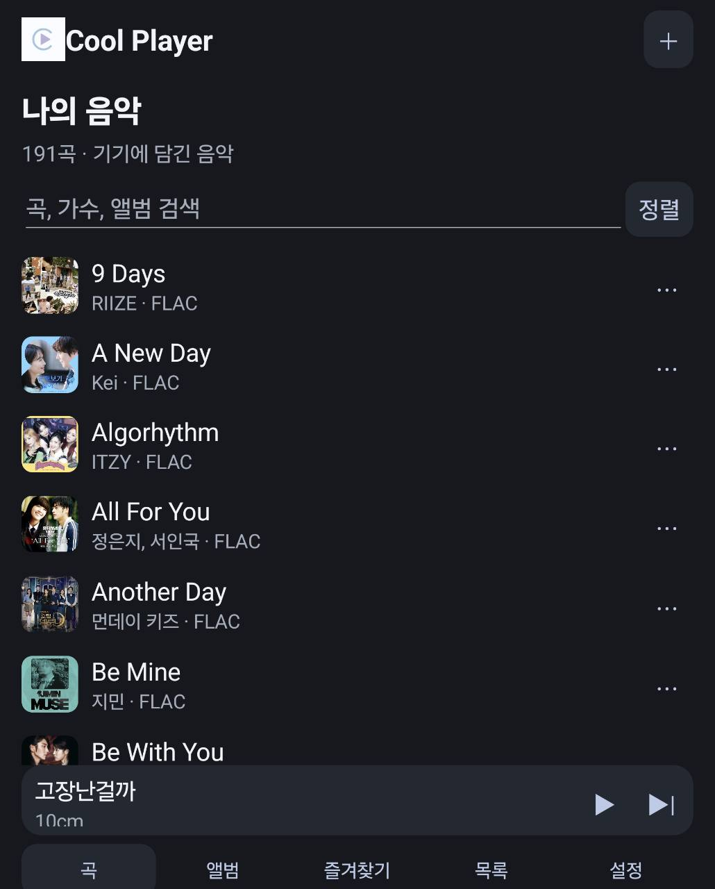
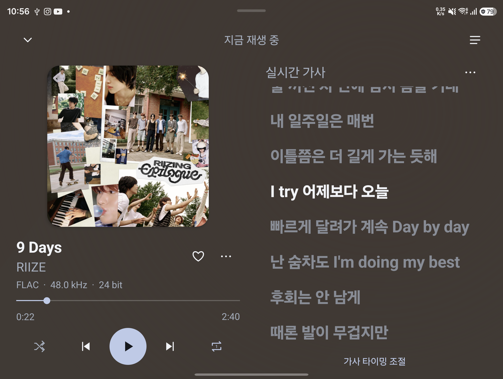
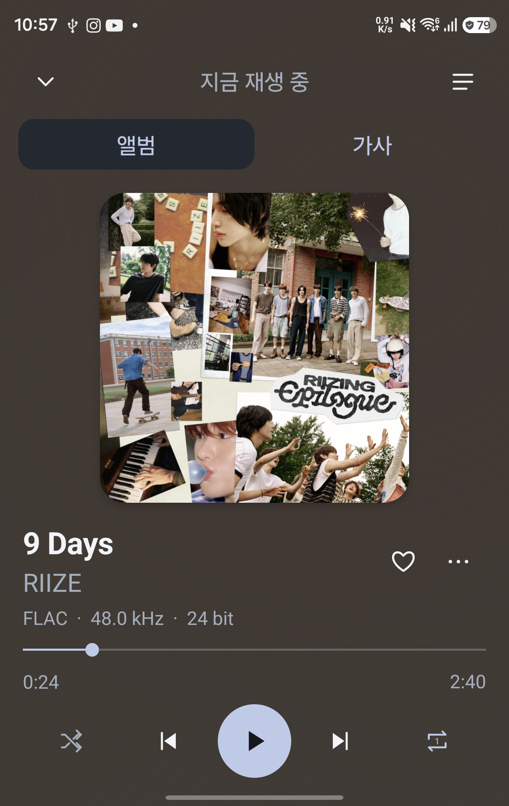

01 / 03
가지고 있는 음원을 한곳에.
파일이나 폴더를 추가하고 곡·앨범·즐겨찾기로 찾아보세요. FLAC, WAV, MP3 등 다양한 음원을 재생합니다.

ANDROID · MAC
가지고 있는 음원으로 재생부터 실시간 가사까지.
별도의 구독 없이 Cool Player에서 즐기세요.
Android 8.1 이상 · macOS 14 Sonoma 이상
Mac은 Apple Silicon(M1 이상) 지원
FLAC · ALAC · MP3 · WAV

가지고 있는 음원으로,
가사까지 함께 보세요.
COOL PLAYER FOR ANDROID
가지고 있는 음원을 추가하세요.
일반 Android 휴대폰에서 앨범과 가사를 간편하게 오가며 들을 수 있습니다.
파일이나 폴더를 추가하고 곡·앨범·즐겨찾기로 찾아보세요. FLAC, WAV, MP3 등 다양한 음원을 재생합니다.

앨범아트를 좌우로 밀어 이전·다음 곡을 선택하세요. 재생 대기열과 곡 메뉴도 재생 화면에서 바로 열 수 있습니다.

가사를 가져오면 현재 줄이 강조됩니다. 글자 크기와 표시 시간을 조절할 수 있고, 태블릿이나 폴드의 넓은 화면에서는 앨범과 나란히 표시됩니다.
휴대폰에서 넓은 화면까지
작은 화면에서는 앨범과 가사를 오가고,
넓은 화면에서는 재생 버튼과 가사를 함께 봅니다.
휴대폰 · 태블릿 · 폴더블화면 크기에 따른 앱 배치
Android 8.1 이상 · 휴대폰·태블릿 지원
COOL PLAYER FOR MAC
실시간 가사부터 음원 정보와 앨범아트 편집,
ALAC 변환까지 Mac에서 이어집니다.
파일이나 폴더를 보관함에 추가하세요. 음원 정보와 앨범아트를 정리하고, 실시간 가사를 함께 볼 수 있습니다.

변환할 곡을 대기열에 담고 출력 규격과 저장 위치를 선택하세요. 변환한 음원은 보관함에 추가해 이어 들을 수 있습니다.

macOS 14 Sonoma 이상 · Apple Silicon(M1 이상)
COOL PLAYER
ANDROID · 1.4.2
Android 휴대폰과 태블릿에서 음악과 가사.
홈 화면에서는 위젯으로 간편하게.
Android 8.1 이상 · APK 직접 설치
APK를 내려받아 열고 Android 설치 안내를 따라 주세요. 기존 앱을 삭제하지 않고 업데이트하면 보관함과 설정이 유지됩니다.
앱의 설정 → 앱 업데이트에서 새 버전을 확인하고 설치할 수 있습니다. 자동 확인을 켜면 앱 실행 시 하루에 한 번 새 릴리스를 확인합니다. 다운로드와 설치는 직접 선택합니다. 1.4.1 사용자는 앱 안의 업데이트 확인을 이용하세요.
MAC · 2.1.0
실시간 가사와 음원 정보 편집.
ALAC 변환까지 Mac 한곳에서.
macOS 14 Sonoma 이상 · Apple Silicon(M1 이상)
ZIP 압축을 풀고 Cool Player.app을 응용 프로그램 폴더로 옮기세요.
음원 변환과 원본 태그 편집은 Mac 앱에서 지원합니다. Android의 출력 음질은 기기와 연결된 오디오 장치에 따라 달라집니다.